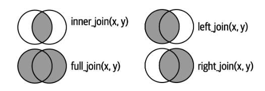
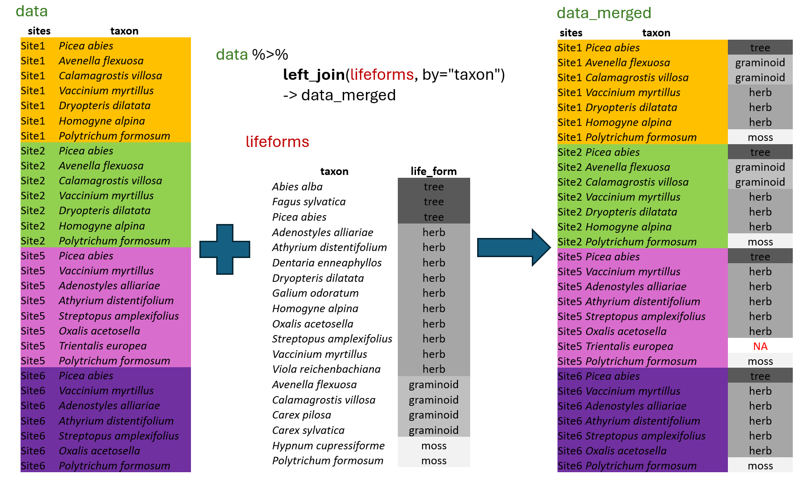
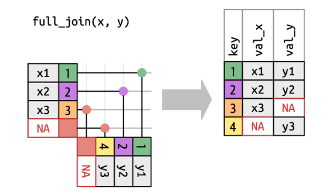
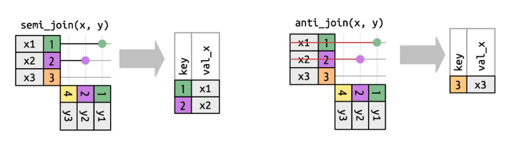

library(tidyverse)
library(readxl)
library(janitor)5 Join Functions
In this chapter we will train how to add the information from another dataset (left_join, full_join), how to filter our data according to another dataset (semi_join, anti_join). We will also use our skills from previous chapter to calculate different statistics about our data, like mean indicator values, community weighted means of some traits, proportion of specific plant groups (left_join, group_by, summarise). We will also look at mutate with more conditions (ifelse, case_when).

Credits: https://r4ds.hadley.nz/joins.html
5.1 Matching selected information with left_join
In most cases, the data you need for analyses are not organised in one file, but rather in more of them. For example we have measured characteristics for each species in the region, so called traits, and we have a species lists for all the sites. To be able to calculate mean values of selected traits for each site, we have to first append the information to individual records. For this we will use the function called left_join which belongs to the group of mutating joins available in tidyverse package dplyr.
This function will automatically look for columns with exactly matching names, or we can specify the corresponding variables directly using the by argument. It will append all the columns available in the second “lifeforms” dataset, but only for rows, where there is a exact match. Although we have information also for other species such as Abies alba or Carex sylvatica, these do not have matching rows in the first dataset “data” and the information therefore will not be used. This means left_join is just picking those rows, that are in the first dataset. If the information is missing in the matching file, e.g. there is no information for Trientalis europaea in the lifeforms dataset, in the resulting file there will be NA.
Let’s train a bit. Start again a new script for this chapter.
We will import the data from Forest understory again.
spe<- read_xlsx("data/forest_understory/Axmanova-Forest-spe.xlsx")and we will import also data with some traits such as plant height, Ellenberg indicator values i.e. values indicating demands on environmental factors as soil reaction, light, nutrients… Lower values indicate lower demands, i.e. species can tolerate low=acidic pH, or low nutrient levels, high values indicate that the species requires or grows in habitats with high=basic soil reaction, high nutrient availability etc.
traits<- read_xlsx("data/forest_understory/traits.xlsx")If we try directly merging these two files it is not working. We will get a warning explaining that there are no common variables.
spe%>% left_join(traits)Error in `left_join()`:
! `by` must be supplied when `x` and `y` have no common variables.
ℹ Use `cross_join()` to perform a cross-join.So there are more options what we can do. We check the data and see that the information we need to match is once saved as Species (in the data) and once as a Taxon (in traits).
tibble(spe)# A tibble: 2,277 × 4
RELEVE_NR Species Layer CoverPerc
<dbl> <chr> <dbl> <dbl>
1 1 Quercus petraea agg. 1 63
2 1 Acer campestre 1 18
3 1 Crataegus laevigata 4 2
4 1 Cornus mas 4 8
5 1 Lonicera xylosteum 4 3
6 1 Galium sylvaticum 6 3
7 1 Carex digitata 6 3
8 1 Melica nutans 6 2
9 1 Polygonatum odoratum 6 2
10 1 Geum urbanum 6 2
# ℹ 2,267 more rowstibble(traits)# A tibble: 316 × 7
Taxon Height SeedMass EIV_Light EIV_Moisture EIV_Reaction EIV_Nutrients
<chr> <dbl> <dbl> <dbl> <dbl> <dbl> <dbl>
1 Quercus pe… 25 975. 6 5 5 4
2 Acer campe… 7.5 54.3 5 5 7 6
3 Crataegus … 5.5 276. 5 5 7 5
4 Cornus mas 4 488. 6 4 8 5
5 Lonicera x… 2 164. 4 5 7 6
6 Galium syl… 0.85 1.10 5 5 6 5
7 Carex digi… 0.2 1.44 4 5 6 6
8 Melica nut… 0.45 2.49 4 5 6 4
9 Polygonatu… 0.45 264. 6 3 7 3
10 Geum urban… 0.55 2.05 5 5 6 7
# ℹ 306 more rowsWe can decide to rename the Species to Taxon and use this column for matching
spe%>% rename(Taxon=Species) %>%
left_join(traits, by="Taxon")# A tibble: 2,277 × 10
RELEVE_NR Taxon Layer CoverPerc Height SeedMass EIV_Light EIV_Moisture
<dbl> <chr> <dbl> <dbl> <dbl> <dbl> <dbl> <dbl>
1 1 Quercus pet… 1 63 25 975. 6 5
2 1 Acer campes… 1 18 7.5 54.3 5 5
3 1 Crataegus l… 4 2 5.5 276. 5 5
4 1 Cornus mas 4 8 4 488. 6 4
5 1 Lonicera xy… 4 3 2 164. 4 5
6 1 Galium sylv… 6 3 0.85 1.10 5 5
7 1 Carex digit… 6 3 0.2 1.44 4 5
8 1 Melica nuta… 6 2 0.45 2.49 4 5
9 1 Polygonatum… 6 2 0.45 264. 6 3
10 1 Geum urbanum 6 2 0.55 2.05 5 5
# ℹ 2,267 more rows
# ℹ 2 more variables: EIV_Reaction <dbl>, EIV_Nutrients <dbl>or we can even skip the by argument, as there is only one commong matching column.
spe%>% rename(Taxon=Species) %>%
left_join(traits)Joining with `by = join_by(Taxon)`# A tibble: 2,277 × 10
RELEVE_NR Taxon Layer CoverPerc Height SeedMass EIV_Light EIV_Moisture
<dbl> <chr> <dbl> <dbl> <dbl> <dbl> <dbl> <dbl>
1 1 Quercus pet… 1 63 25 975. 6 5
2 1 Acer campes… 1 18 7.5 54.3 5 5
3 1 Crataegus l… 4 2 5.5 276. 5 5
4 1 Cornus mas 4 8 4 488. 6 4
5 1 Lonicera xy… 4 3 2 164. 4 5
6 1 Galium sylv… 6 3 0.85 1.10 5 5
7 1 Carex digit… 6 3 0.2 1.44 4 5
8 1 Melica nuta… 6 2 0.45 2.49 4 5
9 1 Polygonatum… 6 2 0.45 264. 6 3
10 1 Geum urbanum 6 2 0.55 2.05 5 5
# ℹ 2,267 more rows
# ℹ 2 more variables: EIV_Reaction <dbl>, EIV_Nutrients <dbl>We can also skip rename step and directly say in the left_join function what is matching with what. Note that it will keep Species as outcome, because this was how we named it in the primary data file
spe%>% left_join(traits, by=c("Species" ="Taxon"))# A tibble: 2,277 × 10
RELEVE_NR Species Layer CoverPerc Height SeedMass EIV_Light EIV_Moisture
<dbl> <chr> <dbl> <dbl> <dbl> <dbl> <dbl> <dbl>
1 1 Quercus pet… 1 63 25 975. 6 5
2 1 Acer campes… 1 18 7.5 54.3 5 5
3 1 Crataegus l… 4 2 5.5 276. 5 5
4 1 Cornus mas 4 8 4 488. 6 4
5 1 Lonicera xy… 4 3 2 164. 4 5
6 1 Galium sylv… 6 3 0.85 1.10 5 5
7 1 Carex digit… 6 3 0.2 1.44 4 5
8 1 Melica nuta… 6 2 0.45 2.49 4 5
9 1 Polygonatum… 6 2 0.45 264. 6 3
10 1 Geum urbanum 6 2 0.55 2.05 5 5
# ℹ 2,267 more rows
# ℹ 2 more variables: EIV_Reaction <dbl>, EIV_Nutrients <dbl>Note that left_join is a great help. But you should always think about the data. If you have more, potentially matching rows you can do a lot of unwanted mess with left_join. For example if you do not use unique ID, but descriptor such as forest type. So please do read the warning messages. :-)
5.2 Full_join vs. bind_rows
Sometimes it is needed to match both datasets. In contrast to left_join, full_join will add also additional rows that appear in the other dataset.

Credits: https://r4ds.hadley.nz/joins.html
We will upload the forest env data and make two subsets to train a bit.
env<- read_xlsx("data/forest_understory/Axmanova-Forest-env.xlsx")In the first subset we will use only first two forest types, namely oak and oak-hoarnbeam forests and selection of variables.
forest1<-env %>% filter(ForestType %in% c(1,2))%>%
select(PlotID=RELEVE_NR, ForestType, ForestTypeName, pH_KCl, Biomass)In the second subset we will use one forest type shared with the previous subset and two others, namely oak-hornbeam, ravine and alluvial forests, and a bit different selection of variables.
forest2<-env %>%
filter(ForestType %in% c(2,3,4))%>%
select(PlotID=RELEVE_NR, ForestType, ForestTypeName, pH_KCl,Canopy_E3)Now left_join the data and check the preview #use view () to see more of the dataset. Here we have just added the extra information available in the second dataset to our selection of plots and variables in the first dataset.
forest1 %>%
left_join(forest2)Joining with `by = join_by(PlotID, ForestType, ForestTypeName, pH_KCl)`# A tibble: 44 × 6
PlotID ForestType ForestTypeName pH_KCl Biomass Canopy_E3
<dbl> <dbl> <chr> <dbl> <dbl> <dbl>
1 1 2 oak hornbeam forest 5.28 12.8 80
2 2 1 oak forest 3.24 9.9 NA
3 3 1 oak forest 4.01 15.2 NA
4 4 1 oak forest 3.76 16 NA
5 5 1 oak forest 3.50 20.7 NA
6 6 1 oak forest 3.8 46.4 NA
7 7 1 oak forest 3.48 49.2 NA
8 8 2 oak hornbeam forest 3.68 48.7 85
9 9 2 oak hornbeam forest 4.24 13.8 80
10 10 1 oak forest 4.00 79.1 NA
# ℹ 34 more rowsIn the next step we will take both subsets and merge them together using full_join. What is the output? We will get a dataset will whole information available, this includes all four forests types. However, since the Forest type 1 is only present in the first subset, the corresponding rows will have only the information available there (forest type, pH). The type 2 is in both datasets so it will have all information from both datasets (forest type, pH, biomass, canopy). Type 3 and 4 will have information only from the second dataset (forest type, pH, canopy). Use view () to see the complete merged dataset.
forest1 %>%
full_join(forest2)Joining with `by = join_by(PlotID, ForestType, ForestTypeName, pH_KCl)`# A tibble: 65 × 6
PlotID ForestType ForestTypeName pH_KCl Biomass Canopy_E3
<dbl> <dbl> <chr> <dbl> <dbl> <dbl>
1 1 2 oak hornbeam forest 5.28 12.8 80
2 2 1 oak forest 3.24 9.9 NA
3 3 1 oak forest 4.01 15.2 NA
4 4 1 oak forest 3.76 16 NA
5 5 1 oak forest 3.50 20.7 NA
6 6 1 oak forest 3.8 46.4 NA
7 7 1 oak forest 3.48 49.2 NA
8 8 2 oak hornbeam forest 3.68 48.7 85
9 9 2 oak hornbeam forest 4.24 13.8 80
10 10 1 oak forest 4.00 79.1 NA
# ℹ 55 more rowsNote that the joining worked good, since we had the same names in both datasets. For example if biomass would be called soil_pH in one and pH_KCl in the other dataset, it will treat them as different variables as you can see below
forest1%>%
rename(soil_pH=pH_KCl) %>%
full_join(forest2)Joining with `by = join_by(PlotID, ForestType, ForestTypeName)`# A tibble: 65 × 7
PlotID ForestType ForestTypeName soil_pH Biomass pH_KCl Canopy_E3
<dbl> <dbl> <chr> <dbl> <dbl> <dbl> <dbl>
1 1 2 oak hornbeam forest 5.28 12.8 5.28 80
2 2 1 oak forest 3.24 9.9 NA NA
3 3 1 oak forest 4.01 15.2 NA NA
4 4 1 oak forest 3.76 16 NA NA
5 5 1 oak forest 3.50 20.7 NA NA
6 6 1 oak forest 3.8 46.4 NA NA
7 7 1 oak forest 3.48 49.2 NA NA
8 8 2 oak hornbeam forest 3.68 48.7 3.68 85
9 9 2 oak hornbeam forest 4.24 13.8 4.24 80
10 10 1 oak forest 4.00 79.1 NA NA
# ℹ 55 more rows*Tip if you are mergin data from different sources and you get similar mess, check function colesce https://dplyr.tidyverse.org/reference/coalesce.html
Imagine situation when data were sampled in different years/months or by different colleagues, or in different regions separately. If these subsets have exactly the same structure, we may use bind_rows function to merge them together, one below each other.
forest1<-env %>%
filter(ForestType ==1)%>%
select(PlotID=RELEVE_NR, ForestType, ForestTypeName, pH_KCl, Biomass)
forest2<-env %>%
filter(ForestType ==2)%>%
select(PlotID=RELEVE_NR, ForestType, ForestTypeName, pH_KCl, Biomass)Bind and check the whole dataset with view()
forest1%>%
bind_rows(forest2)# A tibble: 44 × 5
PlotID ForestType ForestTypeName pH_KCl Biomass
<dbl> <dbl> <chr> <dbl> <dbl>
1 2 1 oak forest 3.24 9.9
2 3 1 oak forest 4.01 15.2
3 4 1 oak forest 3.76 16
4 5 1 oak forest 3.50 20.7
5 6 1 oak forest 3.8 46.4
6 7 1 oak forest 3.48 49.2
7 10 1 oak forest 4.00 79.1
8 11 1 oak forest 3.83 7.4
9 28 1 oak forest 3.56 29.7
10 31 1 oak forest 3.20 14.9
# ℹ 34 more rowsNote that the rbind function in baseR works similarly, but less effectively and it is designed for dataframes.
rm(forest1,forest2) #remove unwanted data from the environment5.3 Filtering joins
Sometimes we need to filter the data according to another dataset. For example I have looked at the environmental file and decided that for a follow-up analysis I need only alluvial forest. I therefore filtered rows in the env file.
env_selected <-env %>%
filter(ForestType==4)%>%
select(PlotID=RELEVE_NR,ForestType, ForestTypeName, pH_KCl, Biomass) %>% print()# A tibble: 11 × 5
PlotID ForestType ForestTypeName pH_KCl Biomass
<dbl> <dbl> <chr> <dbl> <dbl>
1 101 4 alluvial forest 6.67 91.1
2 103 4 alluvial forest 7.12 114.
3 104 4 alluvial forest 7.14 188.
4 110 4 alluvial forest 5.82 126.
5 111 4 alluvial forest 7.01 84.8
6 113 4 alluvial forest 6.61 74.5
7 125 4 alluvial forest 4.99 123.
8 128 4 alluvial forest 7.03 121.
9 130 4 alluvial forest 5.74 238
10 132 4 alluvial forest 5.56 287.
11 127 4 alluvial forest 5.56 176 However, I also need to filter the rows in the species data, where there is no information about forest types. The only common identificator is the PlotID (i.e. sample/site ID).
spe %>% rename(PlotID=RELEVE_NR) %>%
semi_join(env_selected)Joining with `by = join_by(PlotID)`# A tibble: 530 × 4
PlotID Species Layer CoverPerc
<dbl> <chr> <dbl> <dbl>
1 101 Fraxinus excelsior 1 38
2 103 Alnus glutinosa 1 63
3 104 Alnus glutinosa 1 63
4 110 Alnus glutinosa 1 38
5 111 Alnus glutinosa 1 38
6 113 Alnus glutinosa 1 63
7 125 Alnus glutinosa 1 38
8 128 Corylus avellana 1 38
9 130 Acer pseudoplatanus 1 38
10 132 Alnus glutinosa 1 38
# ℹ 520 more rowsWith distinct function you can check if the IDs are the same.
spe %>% rename(PlotID=RELEVE_NR) %>%
semi_join(env_selected) %>%
distinct(PlotID)Joining with `by = join_by(PlotID)`# A tibble: 11 × 1
PlotID
<dbl>
1 101
2 103
3 104
4 110
5 111
6 113
7 125
8 128
9 130
10 132
11 127Sometimes you may need the opposite - to keep only rows/IDs that are not in the other file. For this you should use anti_join function. An example can be that you want to remove from your list certain group of species such as annuals or nonvasculars (mosses and lichens).

5.4 Advanced mutate and .by
Below are few examples, how we used mutate so far
env %>%
mutate(author= "Axmanova", #add one column with specified value
forestType=as.character(ForestType), #change the type of variable
biomass = Biomass*1000, # multiply to change to mg
forestTypeName= str_replace_all(ForestTypeName," ","_"))%>% #change string
select(PlotID=RELEVE_NR, author, forestType, biomass,forestTypeName)# A tibble: 65 × 5
PlotID author forestType biomass forestTypeName
<dbl> <chr> <chr> <dbl> <chr>
1 1 Axmanova 2 12800 oak_hornbeam_forest
2 2 Axmanova 1 9900 oak_forest
3 3 Axmanova 1 15200 oak_forest
4 4 Axmanova 1 16000 oak_forest
5 5 Axmanova 1 20700 oak_forest
6 6 Axmanova 1 46400 oak_forest
7 7 Axmanova 1 49200 oak_forest
8 8 Axmanova 2 48700 oak_hornbeam_forest
9 9 Axmanova 2 13800 oak_hornbeam_forest
10 10 Axmanova 1 79100 oak_forest
# ℹ 55 more rowsWe also used mutate to adjust more variables at once
env %>% mutate(across(c(Radiation, Heat), ~ round(.x, digits = 2))) %>%
select (PlotID=RELEVE_NR, Radiation, Heat)# A tibble: 65 × 3
PlotID Radiation Heat
<dbl> <dbl> <dbl>
1 1 0.88 0.86
2 2 0.93 0.81
3 3 0.92 0.85
4 4 0.93 0.95
5 5 0.87 0.87
6 6 0.92 0.88
7 7 0.83 0.8
8 8 0.87 0.87
9 9 0.61 0.42
10 10 0.91 0.93
# ℹ 55 more rows.x refers to the entire column (vector) being transformed inside a function like mutate(across(…)) or map().
Alternatively if you have a large table with only measured variables you can specify what should not be used, here Species, and mutate will be applied to everything left. This is especially useful for changing formats e.g from character to numeric (function as.numeric)
iris %>%
as_tibble() %>% #first change from dataframe to tibble
mutate(across(-Species,~ round(.x, digits=1)))# A tibble: 150 × 5
Sepal.Length Sepal.Width Petal.Length Petal.Width Species
<dbl> <dbl> <dbl> <dbl> <fct>
1 5.1 3.5 1.4 0.2 setosa
2 4.9 3 1.4 0.2 setosa
3 4.7 3.2 1.3 0.2 setosa
4 4.6 3.1 1.5 0.2 setosa
5 5 3.6 1.4 0.2 setosa
6 5.4 3.9 1.7 0.4 setosa
7 4.6 3.4 1.4 0.3 setosa
8 5 3.4 1.5 0.2 setosa
9 4.4 2.9 1.4 0.2 setosa
10 4.9 3.1 1.5 0.1 setosa
# ℹ 140 more rowsYou can even create a list of functions which should be applied. relocate here was used to shift all the Sepal variables before the first variable / just for easier check.
iris%>%
as_tibble() %>%
mutate(across(starts_with("Sepal"),
list(rounded = round, log = log1p)))%>%
relocate(starts_with("Sepal"),.before = 1)# A tibble: 150 × 9
Sepal.Length Sepal.Width Sepal.Length_rounded Sepal.Length_log
<dbl> <dbl> <dbl> <dbl>
1 5.1 3.5 5 1.81
2 4.9 3 5 1.77
3 4.7 3.2 5 1.74
4 4.6 3.1 5 1.72
5 5 3.6 5 1.79
6 5.4 3.9 5 1.86
7 4.6 3.4 5 1.72
8 5 3.4 5 1.79
9 4.4 2.9 4 1.69
10 4.9 3.1 5 1.77
# ℹ 140 more rows
# ℹ 5 more variables: Sepal.Width_rounded <dbl>, Sepal.Width_log <dbl>,
# Petal.Length <dbl>, Petal.Width <dbl>, Species <fct>What we can further do is to mutate a variable using group_by. This can be like below, step by step…
env %>%
group_by(ForestType) %>%
select(PlotID=RELEVE_NR, ForestType, Biomass)%>%
mutate(meanBiomass=mean(Biomass))%>%
mutate(comparison= (case_when(Biomass>meanBiomass ~"higher",
Biomass<meanBiomass ~"lower",
TRUE ~ "equal")))%>%
arrange(ForestType,desc(Biomass))# A tibble: 65 × 5
# Groups: ForestType [4]
PlotID ForestType Biomass meanBiomass comparison
<dbl> <dbl> <dbl> <dbl> <chr>
1 10 1 79.1 26.7 higher
2 7 1 49.2 26.7 higher
3 6 1 46.4 26.7 higher
4 44 1 34.1 26.7 higher
5 82 1 33.9 26.7 higher
6 28 1 29.7 26.7 higher
7 42 1 21.5 26.7 lower
8 5 1 20.7 26.7 lower
9 81 1 20.6 26.7 lower
10 4 1 16 26.7 lower
# ℹ 55 more rowsor like this, where we do not use stand alone group_by but much more effective .by directly included in the mutate function.
env %>%
select(PlotID=RELEVE_NR, ForestType, Biomass)%>%
mutate(
meanBiomass = mean(Biomass, na.rm = TRUE),
comparison = case_when(
Biomass > meanBiomass ~ "higher",
Biomass < meanBiomass ~ "lower",
TRUE ~ "equal"),
.by = ForestType)# A tibble: 65 × 5
PlotID ForestType Biomass meanBiomass comparison
<dbl> <dbl> <dbl> <dbl> <chr>
1 1 2 12.8 44.4 lower
2 2 1 9.9 26.7 lower
3 3 1 15.2 26.7 lower
4 4 1 16 26.7 lower
5 5 1 20.7 26.7 lower
6 6 1 46.4 26.7 higher
7 7 1 49.2 26.7 higher
8 8 2 48.7 44.4 higher
9 9 2 13.8 44.4 lower
10 10 1 79.1 26.7 higher
# ℹ 55 more rowsWe need to realise, that after you use group_by, the data stay grouped until you explicitly call ungroup(), or use a verb that drops grouping automatically by default settings (usually summariseor count). While summariseremoves the grouping, mutate does not, therefore grouping still applies until the end of that call.
Advantage of .by is that it works only within the mutate function.
5.5 Advanced summarise
Summarise reduces the information to single values per group, defined by the group_by function. We used summarise or summarise across and calculated min, mean, median,max values or sum of the values.
env %>%
group_by(ForestTypeName) %>%
summarise(meanBiomass= mean(Biomass))# A tibble: 4 × 2
ForestTypeName meanBiomass
<chr> <dbl>
1 alluvial forest 148.
2 oak forest 26.7
3 oak hornbeam forest 44.4
4 ravine forest 79.1We did not yet explain anything about n_distinct function. It can be used for getting unique combinations of selected variables directly in summarise. Like here unique number of species in each plot
spe %>%
summarise(unique_species = n_distinct(Species), .by = RELEVE_NR)# A tibble: 65 × 2
RELEVE_NR unique_species
<dbl> <int>
1 1 42
2 2 16
3 3 15
4 4 20
5 5 14
6 6 19
7 7 22
8 8 23
9 9 22
10 10 18
# ℹ 55 more rowsor unique pairs or combinations of selected variables, such as species +their combinations in vegetation layers -here in the whole dataset
spe %>%
summarise(unique_species_layer = n_distinct(interaction(Species, Layer)))# A tibble: 1 × 1
unique_species_layer
<int>
1 369When you become confident with joins and summarise you can even do something like this. I am working with env data, but at the same time I want to use the summarised information from species data. And I can calculate it and match directly in the pipeline without stepping outside, as there is no need to calculating and saving intermediate steps separately.
env %>%
left_join(spe %>%
group_by(RELEVE_NR) %>%
count(name = "Richness")) %>%
select(PlotID=RELEVE_NR,ForestType, ForestTypeName, Richness, Biomass, pH_KCl)Joining with `by = join_by(RELEVE_NR)`# A tibble: 65 × 6
PlotID ForestType ForestTypeName Richness Biomass pH_KCl
<dbl> <dbl> <chr> <int> <dbl> <dbl>
1 1 2 oak hornbeam forest 44 12.8 5.28
2 2 1 oak forest 17 9.9 3.24
3 3 1 oak forest 16 15.2 4.01
4 4 1 oak forest 22 16 3.76
5 5 1 oak forest 15 20.7 3.50
6 6 1 oak forest 22 46.4 3.8
7 7 1 oak forest 23 49.2 3.48
8 8 2 oak hornbeam forest 24 48.7 3.68
9 9 2 oak hornbeam forest 28 13.8 4.24
10 10 1 oak forest 19 79.1 4.00
# ℹ 55 more rowsAnother useful thing is to know how to sum values across more columns and save it in another column, i.e. row-wise sum. The relevant function is called rowSums. We will look at the example of frozen fauna data availability and first we will turn the table into tidy by filling 0 and changing x to 1.
Alternative is #mutate(across( c(pollen_spores, macrofossils, dna), ~ if_else(!is.na(.x) & .x == “x”, 1, 0)))
data<- read_xlsx("data/frozen_fauna/FrozenFauna_metadata.xlsx", sheet=1)%>%
clean_names()%>%
mutate(across(c(pollen_spores, macrofossils, dna), ~ replace_na(.x, "0"))) %>%
mutate(across(c(pollen_spores, macrofossils, dna), ~ if_else(.x == "x", 1, 0)))%>%
mutate(dataAvailableSum = rowSums(across(pollen_spores:dna)))%>%
print()# A tibble: 27 × 7
id code species pollen_spores macrofossils dna dataAvailableSum
<dbl> <chr> <chr> <dbl> <dbl> <dbl> <dbl>
1 1 D-M5 Mammuthus pri… 0 0 1 1
2 2 D-BP4 Bison priscus 0 0 1 1
3 3 D-MP11 Mammuthus pri… 1 1 0 2
4 4 SK2 Stephanorhinu… 0 1 0 1
5 5 MP5 Mammuthus pri… 1 1 0 2
6 6 CA2 Coelodonta an… 0 1 0 1
7 7 MP9 Mammuthus pri… 1 1 1 3
8 8 D-MP10 Mammuthus pri… 1 1 0 2
9 9 MP3 Mammuthus pri… 1 1 0 2
10 10 MP4 Mammuthus pri… 1 1 0 2
# ℹ 17 more rowsSummarise is often used for getting so-called community means or community weighted means. For example we have traits for individual species and we want to calculate a mean for each site and compare it.
spe%>%
left_join(traits, by=c("Species" ="Taxon"))%>%
summarise(meanHeight= mean(Height), .by=RELEVE_NR)# A tibble: 65 × 2
RELEVE_NR meanHeight
<dbl> <dbl>
1 1 NA
2 2 6.00
3 3 3.50
4 4 8.14
5 5 3.82
6 6 NA
7 7 NA
8 8 3.52
9 9 8.25
10 10 NA
# ℹ 55 more rowsSo far, we had data with no missing values, but most probably you will come across situations where there will be some NAs. For this you will need to use argument na.rm=TRUE which indicates that you want to skip the NAs from counting. Otherwise a single NA would mean also the result will be NA. The same happened here, so we need to fix it.
spe%>%
left_join(traits, by=c("Species" ="Taxon"))%>%
summarise(meanHeight= mean(Height, na.rm=T), .by=RELEVE_NR)# A tibble: 65 × 2
RELEVE_NR meanHeight
<dbl> <dbl>
1 1 4.60
2 2 6.00
3 3 3.50
4 4 8.14
5 5 3.82
6 6 3.3
7 7 4.25
8 8 3.52
9 9 8.25
10 10 3.53
# ℹ 55 more rowsWe can also consider to use abundance to weight the result. This is called community weighted mean and it simply gives higher importance to those species that are more abundant and lower importance to the rare once. Here the abundance is approximated as percentage cover in the site.
spe %>%
left_join(traits, by = c("Species" = "Taxon")) %>%
summarise(meanHeight= mean(Height, na.rm=T),
meanHeight_weighted = weighted.mean(Height, CoverPerc, na.rm = TRUE),
.by=RELEVE_NR)# A tibble: 65 × 3
RELEVE_NR meanHeight meanHeight_weighted
<dbl> <dbl> <dbl>
1 1 4.60 12.9
2 2 6.00 16.3
3 3 3.50 16.7
4 4 8.14 17.2
5 5 3.82 15.3
6 6 3.3 9.36
7 7 4.25 12.9
8 8 3.52 11.2
9 9 8.25 14.6
10 10 3.53 14.9
# ℹ 55 more rowsYou can see that the results are quite different! Note that we are in forest so we now compare together heights of trees, which are dominants, and herbs which are small and are less abundant. Especially for the CMW it plays really big role. Therefore we will now compare only for the herb-layer (6).
spe %>%
left_join(traits, by = c("Species" = "Taxon")) %>%
filter(Layer==6)%>%
summarise(meanHeight= mean(Height, na.rm=T),
meanHeight_weighted = weighted.mean(Height, CoverPerc, na.rm = TRUE),
.by=RELEVE_NR)# A tibble: 65 × 3
RELEVE_NR meanHeight meanHeight_weighted
<dbl> <dbl> <dbl>
1 1 0.379 0.367
2 2 0.496 0.483
3 3 0.430 0.404
4 4 0.598 0.593
5 5 0.563 0.527
6 6 0.562 0.561
7 7 0.491 0.522
8 8 0.452 0.657
9 9 0.492 0.481
10 10 0.539 0.555
# ℹ 55 more rowsIn the same way we can calculate community means across more variables. Here we will try the Ellenberg indicator values (abbreviated as EIV, measures of species demands for the particular factors, the higher value mean higher demands or affinity to habitats with higher values of these environmental factors). We will apply them just for presences of species, so no weights. Therefore we do not need to care that much for the differences among layers. However, we will keep each species only once (list of unique species for each plot), so we will remove information about layers first and use distinct. Alternative is to add #filter(Layer==6)%>% if we want to focus on herb-layer only
spe %>%
left_join(traits, by = c("Species" = "Taxon")) %>%
select(-c(Layer,CoverPerc))%>%
distinct()%>%
group_by(RELEVE_NR)%>%
summarise(across(starts_with("EIV"), ~ mean(.x, na.rm = TRUE)))# A tibble: 65 × 5
RELEVE_NR EIV_Light EIV_Moisture EIV_Reaction EIV_Nutrients
<dbl> <dbl> <dbl> <dbl> <dbl>
1 1 5.08 4.64 6.54 4.95
2 2 4.88 4.81 4.94 4.31
3 3 4.87 4.8 4.93 4.4
4 4 5.3 4.5 5.7 4.25
5 5 6.07 4.14 5.57 3.86
6 6 5.72 4.5 6.39 5.22
7 7 5.8 4.4 6.25 4.9
8 8 5.17 4.61 5.43 4.65
9 9 5.32 4.5 5.77 4.41
10 10 6.38 3.69 6.19 3.88
# ℹ 55 more rows5.6 Exercises
1. Do a bit more with Forest understory data. Upload the env file called Axmanova-Forest-env.xlsx create two subsets: forest1, where you select PlotID=RELEVE_NR, ForestType, ForestTypeName and forest2, with columns ForestType, pH_KCl, Biomass > Now use left_join to match forest2 to forest1. What happened? Check how many times there are rows with the same PlotID using some simple functions.
2. Upload the data from Lepidoptera folder . First the env data > check the structure. The structure is inverted and we will first transpose it to be able to work with it normally.
env<- read_xlsx("data/lepidoptera/env_char_MSVejnoha.xlsx") %>%
column_to_rownames(var = "Site") %>% # move 'Site' column to row names
t() %>% # transpose like Excel
as.data.frame() %>% # back to data frame
rownames_to_column(var = "Site") %>% # make the row names a column again
as_tibble()%>%
view()Now look at the tibble again. Since we went through the step with dataframe, everything is changed to a text. Add one more row to change everything to numeric (as.numeric) except for the first column called Site (ID of the site) >> check the histogram of the cover of trees across sites >> prepare a new variable called tree_cover_groups corresponding to low/medium/high cover of tress (select the tresholds based on the histogram) > filter out the group with only low cover >> Import the spe data and filter to have the same sites in both files
3. Upload Penguins data > check names (penguins) > calculate mean weight and SD of weight for different penguin species > visualise the results by ggplot (geom_col).
4. Stay with Penguins, count how many individuals are at each island and to which species they belong. > use a ggplot to visualise this. *Prepare a wide format matrix with islands as rows x species as names, where values will be counts of individuals.
5. Get back to Forest understory species file. Axmanova-Forest-spe.xlsx In the data you can see which species occur in the tree layer (=1) > prepare a table where for each plotID you will have in another column a single name of the tree dominant, i.e. tree with highest cover (for simplicity, specify in the slice_max to take just n=1, with_ties=F) > append it to env data > summarise counts of plots with each of the dominant *alternatively you can prepare a script, where all spe data handling will be a part of pipeline of env data handling
6.Use forest datasets - species and traits > calculate community mean and community weighted mean for SeedMass. *create boxplots for these means within forest types (info about forest type is available in env file).
5.7 Further reading
Joins -chapter in R for data science https://r4ds.hadley.nz/joins.html
Summarise https://dplyr.tidyverse.org/reference/summarise.html
Summarise multiple columns https://dplyr.tidyverse.org/reference/summarise_all.html
Mutate across https://dplyr.tidyverse.org/reference/across.html
If else, case when chapter in R for data science https://r4ds.hadley.nz/logicals.html#conditional-transformations
Case when https://dplyr.tidyverse.org/reference/case_when.html
Case when example https://rpubs.com/jenrichmond/case_when